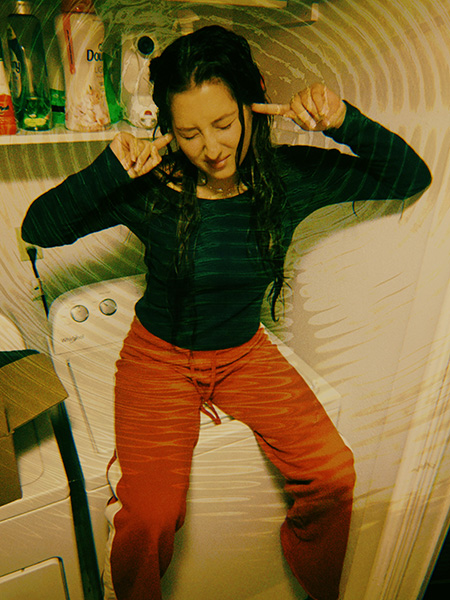

Sarah's series showcases her personal cultural history through artwork that pairs portraits of family members with the imagery of the American flag. In this portrait, a young girl with her hair tied up is drawn in loose charcoal against a soft gray background. The flag is reduced to just its stars, scattered across her shoulders and the space around her. The most striking detail is a large star cut across the center of her face. Inside it, the charcoal gives way to warm, painted skin, so that one eye, her nose, and her cheek appear in full color while the rest of her stays gray.
The most obvious element is the star itself, which immediately draws the eye to her face. The most mysterious is what the two layers mean. Is the gray charcoal the surface and the painted color who she really is underneath, or is the star something placed over her, defining how she is seen or a new lens through which she is seeing the world? Her downcast gaze and slight frown add to the question, giving the portrait a quiet, thoughtful mood. Small touches of color, like the yellow clip in her hair and the stars on her shirt, suggest that pieces of her identity are scattered rather than whole.
To push the narrative further, I would suggest letting the family's own stories enter the image more directly, perhaps through a handwritten name, date, or memory these artworks connect to. In an interactive layout, zooming in and out of each star could reveal a hidden detail about her, turning the cut-out idea into an interaction.
Part Two: My Sonder Project

Zofia Purat, 2026
This image captures one of my friend Audrey's oddly specific dislikes: the sound her washing machine makes three-quarters of the way through its cycle. She sits right on top of the machine with her fingers pressed into her ears and her eyes squeezed shut, bracing for a noise. Something viewers would not know from the image alone is what the sound is actually like, and the fact that she only dislikes the noise at one very specific point in the cycle. The cramped laundry room, crowded shelf of detergent, and warm light make it feel like a private, everyday moment.
My project is about sonder, the realization that every stranger has a life as detailed and complicated as your own. Inspired by the way the film Amélie introduces its characters through tiny likes and dislikes, each image zooms in on a person to reveal the specific quirks that make them who they are. This image fits the collection because a small annoyance like this says more about a person than a typical portrait would. The project also reflects how I see the world: I've always loved noticing the small details around me in the physical world, and this way of seeing also applies to the people around me.
To make the images more compelling, I want to explore how text and interactions can interact with the images to tell the story in a more intriguing way. I also want to continue to explore edits to the images through Photoshop, which I have been doing with the images already, but could push further.
Visual Thinking Strategies
Reading “10 Intriguing Photographs to Teach Close Reading and Visual Thinking Skills” made me realize that close looking isn’t just something viewers do. It’s something designers can plan for. The article’s three questions (What’s going on? What makes you say that? What more can you find?) work because the photos are a little hard to read at first. Designers make that same choice. A site going for a mysterious mood might use imagery that takes time to decode, while an informational site needs images that are understood right away. How difficult an image is to interpret shapes the interaction and emotion it creates in the user, which feels especially useful as we start our imagery-based web design project.
For my example, I chose Flatline Agency, an Amsterdam agency that builds online stores for luxury brands. The homepage opens with a large serif headline layered over a faded photo, and as you scroll, that image grows into a full-screen video. My favorite detail is that on the sections below the main hero, imagery only appears when you hover over an item, which gives a nice preview while keeping the page calm and less overstimulating. I’m also inspired by the dynamic compositions created by layering type, images, and video
Pop-upsand lightboxs are everywhere online, and most of the time I just click the X without thinking about it. Kathryn Whitenton’s article “Overuse of Overlays” made me stop and think about them more. Her main point is that a lot of designers use overlays because it’s easy for them, not because it helps the people using the site. She gives a simple checklist called the five W’s. You ask who the audience is, what the user should do, when the overlay shows up, and where it sits on the screen. Then you ask the big one: why can’t this content just go on a normal page? I like this list because it makes you defend your choice and is very user experience centered.
I related a lot to her examples as well. Last week I tried to buy a new top on my phone, and a pop-up covered the whole screen. The close button was nearly impossible to click. I gave up and closed the tab, so that store lost a sale. As we continue to build interactive stuff in this class, I will keep in mind that my overlays should be short, easy to close, and only appear when the user asks.
Salim Ansari’s “Best practices for form design” helped me see how small design choices shape the experience of filling out a form. Clear labels and visible password requirements give users guidance throughout the process. I especially liked the advice about helpful error messages. A specific message explains the problem and gives someone a clear next step. Repeated mistakes can also show designers where their instructions need improvement.
The recommendations about asking relevant questions and explaining requests for sensitive information stood out to me. Each question takes someone’s time and asks them to share something about themselves. Designers should explain the purpose of those requests and give users enough information to make a comfortable decision. I think these details help an interface earn someone’s trust.
The article’s focus on increasing form completion also made me think about the designer’s priorities. Easy questions can help people get started, but delaying sensitive requests can pressure people who have already invested time. I would prefer a form that explains its requirements early. That approach lets me decide whether I want to continue. Overall, I think a successful form helps people complete a task with clarity and confidence while giving them control over their choices.
Pinterest
uses separate screens and a progress bar to organize its
signup process into manageable steps. Its visible password
instructions and password-viewing option also connect to
Ansari’s advice about helping users enter information accurately.